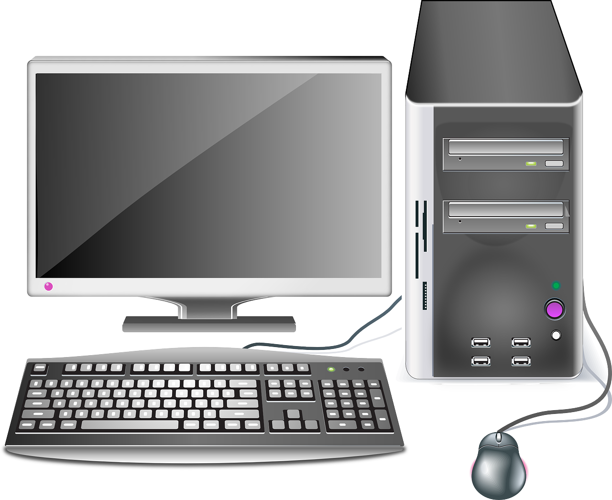
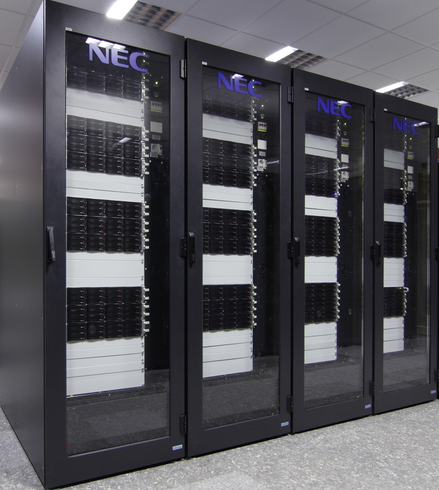
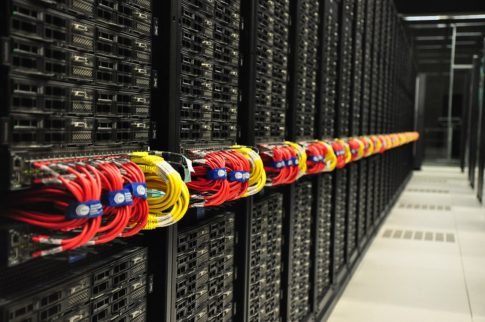

Clasificación de los ordenadores¶
Dependiendo de la potencia, del tamaño del hardware y de su función, podemos clasificar a los ordenadores en alguno de los siguientes apartados.
- Controladores programables
Son pequeños ordenadores de baja potencia, destinados a controlar de forma inteligente aparatos domésticos, elementos de un automóvil, etc. Estos controladores son los que permiten realizar programas a una lavadora, temporizar digitalmente un horno microondas, activar el freno ABS de un automóvil, realizar mediciones de consumo eléctrico a distancia, validar una tarjeta de transporte en el autobús, encender una bombilla mediante conexión wifi, controlar una máquina expendedora, etc.
En la industria se utilizan controladores programables especializados para mover máquinas de forma automática o para recoger datos y controlar procesos industriales. Estos controladores se denominan PLC y SCADA.
A medida que se abaratan los precios de los componentes electrónicos, cada vez más aparatos incorporan pequeños ordenadores que les añaden inteligencia. Estos pequeños controladores añadidos a los objetos cotidianos y conectados a Internet es lo que se denomina Internet de las cosas o IoT.
Uno de los controladores para uso doméstico y de entretenimiento más conocido es la placa Arduino UNO, con arquitectura de 8 bits y 32 kbytes de memoria de programa.
- Wearables
Un wearable o tecnología vestible es un pequeño ordenador incorporado a prendas de vestir. Incluye a los relojes inteligentes o smartwatch, gafas inteligentes, etc.
Esta tecnología puede ser utilizada para monitorizar la salud de los usuarios.
- Ordenador de una sola placa (SBC)
Los ordenadores de una sola placa son ordenadores completos en una sola placa de circuito impreso de tamaño reducido que incluye una CPU, RAM, periféricos, conectores y demás componentes típicos de un ordenador.
Uno de los SBC de bajo costo más conocidos es la placa Raspberry Pi. Es un microordenador personal que ejecuta el sistema operativo Linux y solo necesita añadir un teclado, un ratón y un monitor para tener con ella un PC operativo.
- SmartTV
Son pequeños ordenadores pensados para añadir inteligencia (smart) a una televisión tradicional. Permiten desde decodificar las señales digitales vía satélite hasta añadir capacidades como conectarse a Internet y ver servicios de streaming como Netflix, HBO o Amazon Prime.
Algunos de los más conocidos son Google Chromecast, Amazon Fire TV y Apple TV,
Muchos televisores actuales (smartTV) ya llevan incorporados ordenadores que permiten realizar estas tareas, al igual que conectarse por Internet a las empresas fabricantes. Esto ha ocasionado polémicas debido a que estos televisores pueden grabar las conversaciones de su alrededor y enviarlas al fabricante.
- Videoconsolas
Las videoconsolas son ordenadores orientados a ejecutar videojuegos. Pueden tener una potencia relativamente elevada.
Su uso se reduce exclusivamente al juego y la disponibilidad de muchos de estos juegos está limitada a una sola plataforma, por lo que muchos usuarios de videojuegos prefieren usar un ordenador personal (PC) de altas características en su lugar. La diferencia entre los dos tipos de ordenadores reside en el precio. Para una misma potencia de proceso, un PC puede costar el doble que una videoconsola de última generación equivalente.
- Ordenadores dedicados
Existen más tipos de ordenadores dedicados a realizar una sola función de forma especializada. Son ordenadores más potentes que los controladores programables.
Ejemplos de este tipo de ordenadores son los servidores de datos NAS que permiten compartir archivos de datos en una red de ordenadores, fotocopiadoras, routers, cajeros automáticos, etc.
- Teléfono inteligente
Un teléfono inteligente o smartphone es un dispositivo que combina las funciones de un teléfono móvil con las de un ordenador de bolsillo.
Actualmente son los ordenadores de uso más habitual para la mayoría de las personas.
Su sistema operativo suele ser Android (de Google) o iOS (de Apple).
- Tableta
Una tableta o tablet es un pequeño ordenador basado en una pantalla táctil que generalmente funciona con los mismos sistemas operativos que los teléfonos móviles (Android e iOS).
En ciertos casos pueden incluir periféricos como un teclado o ratón, aunque la mayoría de las veces solo se manejan mediante la pantalla táctil.
Hay teléfonos inteligentes con un tamaño mayor del habitual (mayor de 6 pulgadas de diagonal) se les denomina tabléfonos o phablet.
- Ordenador portátil
Un ordenador portátil es un ordenador personal (PC) capaz de realizar todas las tareas de un ordenador de escritorio, pero con un pequeño tamaño y batería incluida por lo que se puede desplazar fácilmente para ser usado en cualquier lugar.
Los portátiles Netbooks son ordenadores pensados para conectarse a Internet y tienen menos capacidades que un portátil habitual. Suelen llevar un sistema operativo ligero basado en Linux y tienen un precio reducido. Los modelos más conocidos son los Chromebook de Google.
- Ordenador personal de escritorio
Con ordenador personal o PC se suele denominar a un microordenador de escritorio, de uso general, para ser usado por una persona. Los ordenadores personales actuales comenzaron a venderse en 1981 por IBM aunque pronto aparecieron ordenadores con un funcionamiento semejante (clónicos) fabricados por otras empresas.
Su sistema operativo suele ser Windows, MacOS o Linux.
Los ordenadores personales de altas prestaciones también se denominan estación de trabajo. Tienen mucha más potencia de cálculo y capacidad de almacenamiento que un ordenador personal habitual.
Imagen de OpenClipart-Vectors en Pixabay¶
- Mainframe
Un mainframe o unidad central es un ordenador utilizado principalmente por grandes organizaciones para aplicaciones críticas que requieren ordenadores muy fiables y con gran capacidad de almacenamiento.
Estos ordenadores se utilizan para realizar operaciones bancarias, censos, servidores de Internet, etc.
- Clúster de ordenadores
Un clúster de ordenadores es un gran ordenador compuesto por un conjunto de ordenadores unidos entre sí por una red de alta velocidad y sincronizados por un sistema operativo, que suele ser Linux, para que se comporten como un solo ordenador.
Actualmente este tipo de ordenadores está sustituyendo poco a poco a los mainframes en sus funciones.
Hindermath, CC BY-SA 3.0, via Wikimedia Commons.¶
- Superordenador
Un superordenador es un ordenador utilizado para realizar grandes cálculos tales como predecir el tiempo atmosférico, investigaciones sobre el genoma, nuevos medicamentos, etc. Manejan grandes cantidades de datos realizando una gran cantidad de cálculos por segundo (hasta 16 000 millones de millones de operaciones por segundo en 2022)
En un principio se utilizaban mainframes dedicados a cálculo intensivo, pero actualmente están basados en la tecnología de clúster de ordenadores.
En España el superordenador más famoso es el MareNostrum, compuesto por un clúster de 48 896 procesadores Intel Xeon.
Supercomputador MareNostrum 4 en el centro de supercomputación de Barcelona.¶
Vcarceler, CC BY-SA 4.0, via Wikimedia Commons.


{kind=link}
{kind=link}
{kind=link}
{kind=link}
{kind=link}
{kind=link}
{kind=link}
{kind=link}